A Montanha
O lugar impossível, o que estava antes dos espanhóis e a descoberta que começou tudo em 1545.
Geografia e geologia do Cerro Rico
Potosí fica no sul do que hoje é a Bolívia, na parte do altiplano andino chamada Serranía de Kari Kari, a cerca de 4.090 metros acima do nível do mar. É uma das cidades grandes mais altas do planeta. O ar é tão rarefeito que turistas vindos do nível do mar normalmente passam a primeira noite sem dormir, com dor de cabeça e falta de ar.
A cidade cresceu em volta de um morro cônico que os quéchuas chamavam de Sumaq Urqu e que os espanhóis batizaram de Cerro Rico. É esse morro, e só ele, que explica toda a história de Potosí.


Geologicamente é um domo vulcânico antigo, formado quando magma dacítico se intrometeu num conjunto de xistos ordovicianos e esfriou. A datação mais aceita, do estudo de Cunningham e colegas publicado em Mineralium Deposita em 1996, coloca a formação em cerca de 13,8 milhões de anos atrás.
O Cerro Rico tem uma estrutura rara: um núcleo rico em estanho e tungstênio (cassiterita, wolframita, bismutinita) cercado por uma zona externa de sulfetos de prata, chumbo e zinco. Os espanhóis quase não notaram o estanho; o que interessava era a camada externa, onde a prata se concentrava em veios verticais famosos: Veta Rica, Veta de Centeno, Veta del Estaño.
Havia uma vantagem extra. O topo do morro passou por milhões de anos de intemperismo, e nessa zona oxidada o sulfeto de prata original se transformou em clorargirita, uma forma de prata mais fácil de processar. Essa camada superficial é o que fez o Cerro Rico ser a mina mais produtiva do mundo nos primeiros cinquenta anos de exploração espanhola. Quando essa zona esgotou, no final do século XVI, a produção caiu brutalmente — e é aí que entra o mercúrio e muda tudo.
Vale registrar outra coisa sobre o lugar: Potosí é geograficamente pobre em quase todo o resto. A região não produz trigo nem milho em escala, não tem madeira, tem pouca água. Tudo precisava ser trazido de longe — a comida vinha de Tarija, Cochabamba e do norte da Argentina; o combustível vinha de regiões de arbustos a dezenas de quilômetros; a lã dos panos vinha dos rebanhos de lhama do altiplano; o mercúrio vinha de Huancavelica, no Peru, a mais de mil quilômetros de distância. Cada peso de prata que saía de Potosí carregava embutido o esforço logístico de abastecer uma cidade impossível.
A prata dos incas e as huayras

Durante muito tempo se achou que a mineração de prata no Cerro Rico tinha começado com Francisco Pizarro e companhia. Pesquisas recentes mostram que isso não é verdade. Estudos de sedimentos de lagos andinos publicados por Mark Abbott e colaboradores identificaram picos de chumbo atmosférico — subproduto da fundição de prata — em várias regiões dos Andes a partir do ano 400 d.C., coincidindo com o auge do império Tiwanaku.
Mais relevante ainda, lagos próximos a Potosí registram um aumento marcado de chumbo logo depois da conquista inca da região, por volta de 1450, sugerindo que a mineração sistemática no Cerro Rico já existia no período inca.
O cronista indígena Felipe Guaman Poma de Ayala, escrevendo entre 1600 e 1615, afirma que o imperador Huayna Capac mandou mineiros para o Cerro Rico antes dos espanhóis. A versão oficial espanhola, promovida pelo vice-rei Francisco de Toledo, prefere a lenda do pastor Diego Huallpa que teria descoberto a prata por acaso em 1545.
Essas duas versões não são apenas folclore — elas são ideológicas. A versão de Toledo apaga a presença indígena anterior e legitima a posse espanhola como "descoberta". A versão de Guaman Poma reivindica a continuidade do conhecimento andino. A arqueologia dá mais apoio à segunda.
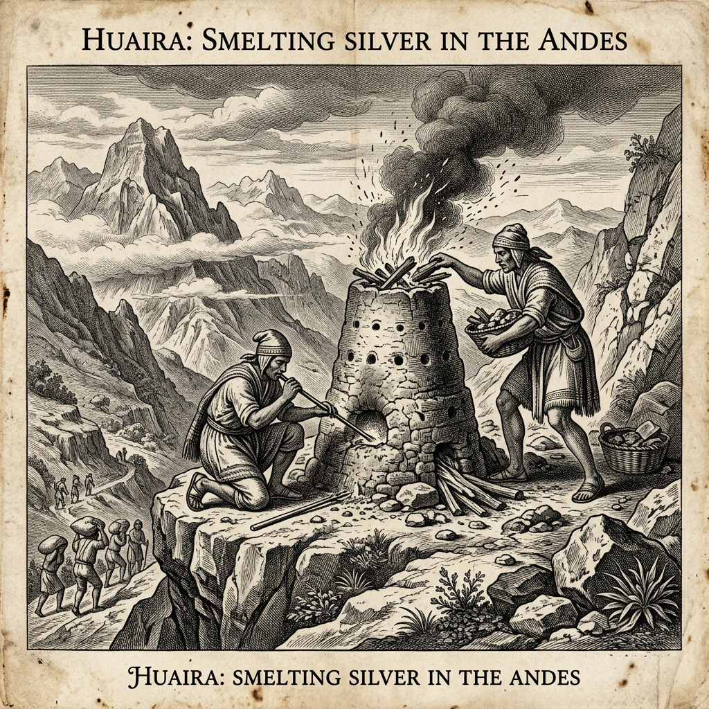
Tecnicamente, os indígenas pré-hispânicos fundiam prata com um forno engenhoso chamado huayra, do termo quéchua para vento. É um forno pequeno, em forma de torre, com furos nas laterais, projetado para funcionar em cristas e passos de montanha, onde o vento do altiplano é constante e forte. O vento substitui o fole: o fluxo natural de ar aquece o carvão a temperatura suficiente para derreter a mena.
Essa tecnologia continuou em uso paralelo durante parte do período colonial. No contexto do Potosí colonial, as huayras foram substituídas pela técnica espanhola de amálgama por volta de 1572.
Diego Huallpa e a lenda do pastor
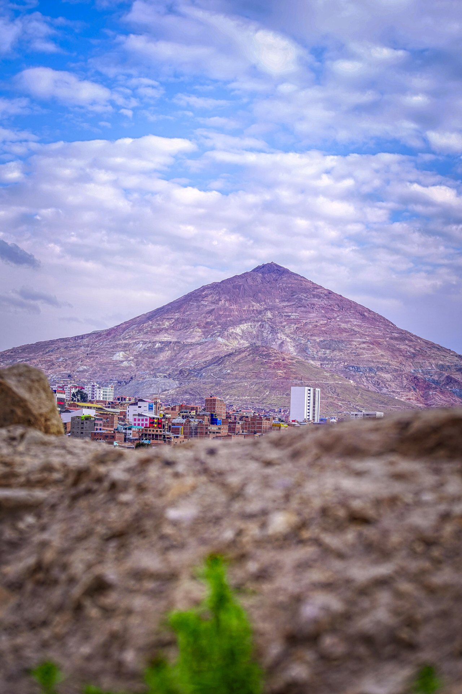
A data que entra nos livros é 21 de abril de 1545, quando os espanhóis registram a "posse" do morro. O documento que diz isso é de autenticidade contestada por historiadores bolivianos como Juan José Toro Montoya, que suspeita que o papel tenha sido redigido posteriormente para dar base jurídica a algo que já estava em curso de fato.
A versão lendária envolve um pastor indígena chamado Diego Huallpa, ou Gualpa, dependendo da fonte.
A história diz que ele estava subindo a montanha atrás de uma llama que tinha fugido, foi pego pela noite, fez uma fogueira para se aquecer, e quando acordou viu que o calor do fogo tinha derretido um fio de prata puro saindo do chão. Outras versões dizem que ele estava arrancando plantas e viu o veio aparecendo.
A primeira década do assentamento é caótica. Prospectores de todas as origens disputam veios a facadas, autoridades mal estabelecidas tentam impor ordem, e a cidade cresce sem plano. Diferente de Lima ou México, Potosí nasceu como acampamento de corrida do metal, não como fundação planejada.
A produção inicial foi facilitada pela zona oxidada do topo. Nos primeiros 25 anos, os indígenas que trabalhavam como yanaconas — trabalhadores livres por contrato — controlavam grande parte da extração e da fundição. Eles tinham o conhecimento das huayras, extraíam mena de qualidade superior, e vendiam a prata processada para comerciantes espanhóis.
Essa foi uma janela curta em que indígenas participavam da economia da prata com relativa autonomia. Durou até duas coisas acontecerem ao mesmo tempo: o esgotamento da zona oxidada no fim dos anos 1560 e a chegada do vice-rei Francisco de Toledo, em 1572. Com Toledo, veio a reorganização completa da relação de trabalho e da tecnologia — e o que surgiu depois disso foi outra coisa.
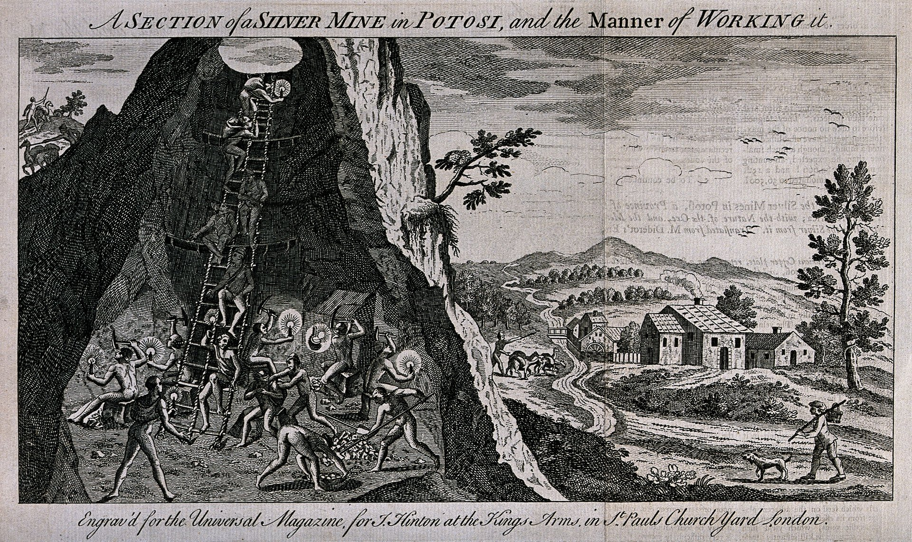
A Máquina
A química que destravou a escala, o sistema hidráulico colossal, e a fábrica de corpos que sustentou tudo por 240 anos.
O processo do pátio e o veneno
O patio process é central para entender tudo o que vem depois. Ele foi desenvolvido por Bartolomé de Medina em Pachuca, no México, em 1554. Medina não inventou do zero: o conhecimento de que mercúrio forma amálgama com prata era antigo, e é possível que ele tenha aprendido o processo com um alemão chamado Lorenzo. O que Medina fez foi estruturar um método industrial, com escala.
O processo chega aos Andes em 1571, e transforma Potosí. A grande vantagem é que ele viabiliza processar minério de baixa qualidade, que antes era descartado.

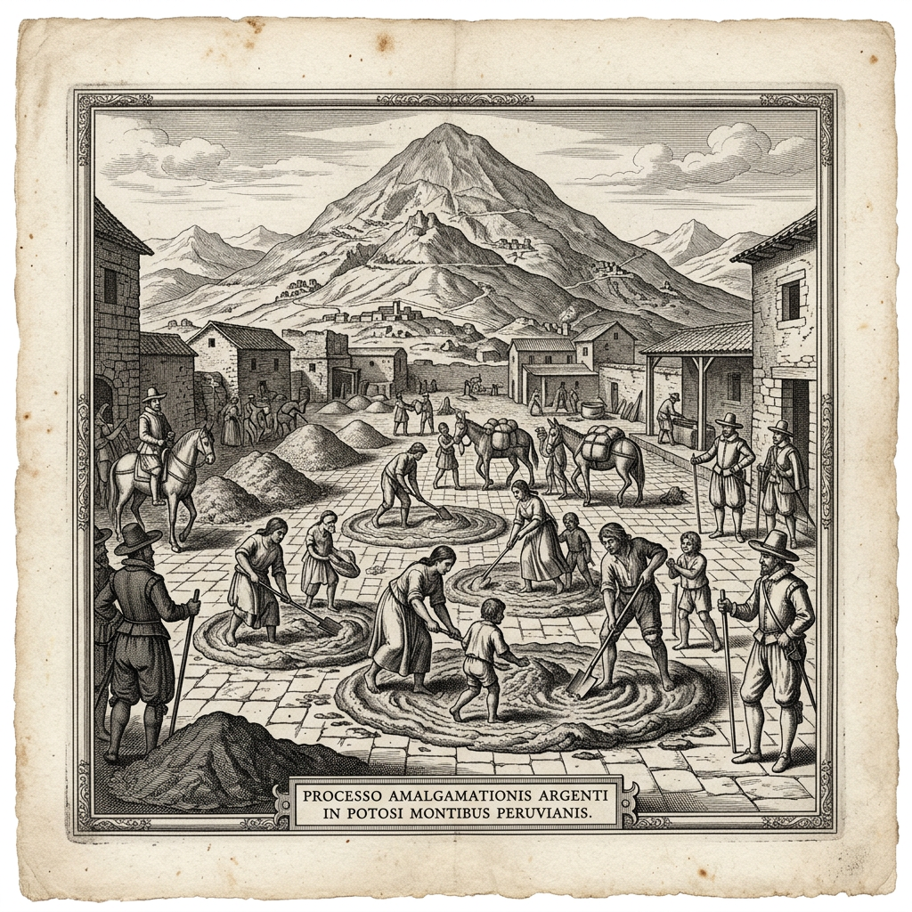

O processo funciona assim: você moe o minério até pó fino. Espalha o pó num pátio grande, de superfície impermeável. Mistura com sal, um pouco de sulfato de cobre (chamado de magistral), e mercúrio líquido. Trabalhadores, incluindo mulheres e crianças, pisam a mistura durante semanas, com os pés descalços, para garantir a reação química. O mercúrio se liga à prata, formando uma massa pegajosa cinza-prateada: a amálgama. No fim, essa amálgama é separada do resto por lavagem, aquecida num cadinho, e o mercúrio evapora, deixando a prata pura.
Com a zona oxidada esgotada, Potosí poderia ter entrado em declínio irreversível — mas o patio process permitiu continuar extraindo prata dos sulfetos profundos.
O mercúrio vinha de Huancavelica, no Peru, descoberta em meados dos anos 1560. Os trabalhadores forçados extraíam cinábrio em galerias sem ventilação. Mercúrio em forma de vapor destrói o sistema nervoso. Causa tremor, perda de memória, inchaço nas gengivas, dentes caindo, convulsões, e morte.
Nicholas Robins (Mercury, Mining, and Empire, 2011) estima que 85% do mercúrio usado em Potosí escapava para a atmosfera, e que nas galerias de Huancavelica as concentrações de vapor excediam em 300 vezes os padrões modernos de segurança.
Entre 1575 e 1635, Potosí viveu seu auge absoluto: o historiador Kris Lane estima que, nesse período, o Cerro Rico sozinho produziu quase metade de toda a prata do mundo. O preço técnico desse processo foi um problema físico enorme: para moer tanto minério e processar tanta amálgama, era preciso muita água e muito mercúrio. E as duas coisas eram escassas.
As 32 lagunas e a enchente de 1626
Potosí fica num terreno naturalmente seco. Para resolver o problema da água, Toledo mandou construir, a partir de 1572, um sistema hidráulico colossal: uma rede de lagoas artificiais nas montanhas acima da cidade.
O número exato varia nas fontes — de 20 a 34 —, mas 32 é o mais citado. Essas lagoas, na Serranía de Kari Kari, eram represadas com paredes de pedra, terra e champa, torrões de grama.
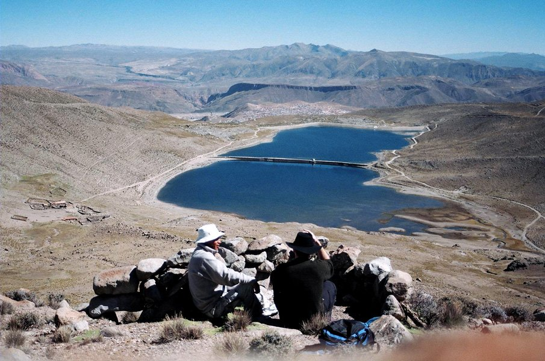
A água descia por um canal chamado Ribera, que passava pela cidade. Na margem da Ribera foram construídos mais de cem ingenios — moinhos movidos a roda d'água que pulverizavam o minério. Esse sistema funcionava bem na estação chuvosa, de fevereiro a maio, e minguava no resto do ano. Quando a água baixava, a moagem parava e a produção parava junto. O calendário econômico de Potosí girava em torno das chuvas.
Depois de uma seca seguida de chuvas pesadas em 1626, uma das represas — a laguna de San Ildefonso — cedeu. O que veio foi uma onda de água, lama e pedras que desceu a montanha e atravessou a cidade. Pelas estimativas mais citadas, cerca de 350 pessoas morreram. Além das mortes, foi destruído um pedaço importante da infraestrutura dos ingenios, e a produção levou anos para se recuperar.
A catástrofe é relatada por Arzáns de Orsúa y Vela em sua crônica com pavor religioso: a cidade da prata sendo lavada pela montanha. Essa relação entre a cidade e o abastecimento de água nunca foi completamente resolvida — o mesmo sistema de lagoas, com reformas, continuou servindo Potosí até o século XX.
A mita: a fábrica de corpos

Francisco de Toledo governou o vice-reino do Peru de 1569 a 1581. É sem dúvida o personagem administrativo mais consequente da história de Potosí. Antes de chegar a Lima, Toledo era um burocrata experiente, com visão sistemática. Chegou com instruções do rei para reorganizar o vice-reino e colocá-lo de pé economicamente.
Entre as muitas coisas que ele fez — criou o sistema de reducciones, aldeamentos forçados de indígenas; executou o último Inca de Vilcabamba, Túpac Amaru I, em 1572 — a mais consequente para Potosí foi o estabelecimento da mita em 1572-1573.
A palavra vem do quéchua mit'a, que significa "turno" ou "vez". Nos tempos dos incas, a mit'a era uma forma rotativa de trabalho tributário: comunidades mandavam membros para servir ao Estado por períodos determinados. Era um sistema com reciprocidade: quem servia era alimentado pelo Estado. A versão de Toledo pegou o nome e a estrutura rotativa, mas descartou a reciprocidade.
A mita de Potosí, formalizada em 1573, funcionava assim: comunidades indígenas de uma área enorme — do que é hoje o sul do Peru, oeste da Bolívia e norte do Chile, cobrindo aproximadamente meio milhão de quilômetros quadrados — deviam fornecer uma cota anual de trabalhadores. A proporção clássica é um sétimo dos homens adultos, embora Jeffrey Cole, em The Potosí Mita, 1573-1700 (Stanford, 1985), mostre que a aplicação variava por região e por ano.
O recrutamento era organizado por capitães da mita, geralmente autoridades locais indígenas forçadas a cumprir a cota. Os trabalhadores iam a pé, com as famílias, carregando mantimentos. A viagem de algumas regiões levava dois a três meses.

As condições dentro das minas são descritas em detalhe pelo jesuíta José de Acosta em sua Historia Natural y Moral de las Indias (1590). Acosta era ele mesmo um defensor do sistema colonial, mas não escondia o horror: operários descendo centenas de metros por escadas de couro trançadas, à luz de velas de sebo, carregando sacos de mena pelas costas em jornadas de até 12 horas dentro do veio.
A estratégia principal de resistência não foi revolta, mas fuga. Famílias inteiras abandonavam suas comunidades ancestrais e migravam para regiões isentas da mita ou para a própria cidade de Potosí, onde passavam a ser classificadas como forasteros. Pela metade do século XVIII, pesquisas sobre populações de La Paz e Cusco mostram que metade dos indígenas de La Paz e um terço dos de Cusco eram forasteros.
Esse deslocamento massivo é uma das histórias mais importantes e menos contadas do colonialismo andino. Pessoas abandonando terras ancestrais não por aventura, mas para não morrer na mina. A mita foi finalmente abolida em 1812, pelas Cortes de Cádiz, durante a crise imperial da Espanha.

A Cidade
A chegada dos africanos, o auge cosmopolita a 4.000 metros, e o escândalo da moeda que abalou o império.
A história que quase não é contada
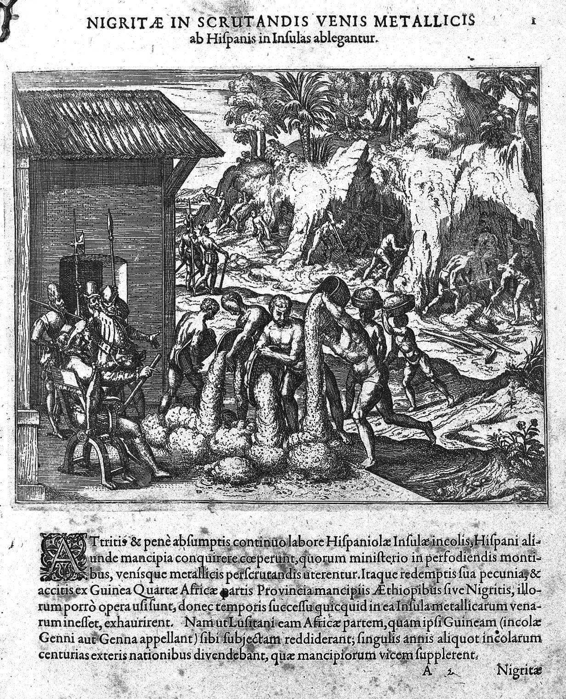
A história dos africanos em Potosí quase não é contada, mas é importante. Depois das primeiras décadas de uso intensivo de mão-de-obra indígena, a mortalidade da população nativa começou a ser percebida como um problema econômico. Em 1608, colonos espanhóis em Potosí fizeram uma petição formal à Coroa pedindo a importação de 1.500 a 2.000 escravos africanos por ano para suprir a falta de mão-de-obra. A demanda foi parcialmente atendida.
Estimativas modernas falam em cerca de 30.000 africanos trazidos a Potosí ao longo do período colonial, embora as fontes variem. Uma fonte afirma que em 1611 cerca de 6.000 negros e mulatos trabalhavam nas minas da região. As origens principais eram Angola, Cabo Verde e o Congo, chegando via rotas transatlânticas que passavam pelo Brasil e pelo Rio da Prata.
As condições para os escravos africanos eram ainda piores que para os mitayos. A altitude e o frio eram mortíferos para quem vinha de climas tropicais. Fontes falam que muitos escravos não sobreviviam mais que alguns meses. A população afrodescendente de Potosí nunca foi grande em números absolutos, mas deixou marcas culturais na música, nos ritmos e na religiosidade da região. Muitos foram realocados para as Yungas, as valações subtropicais da Bolívia, onde foram usados em plantações de coca.
Uma das maiores cidades do mundo

Em 1600, Potosí tinha, segundo o censo oficial do vice-rei Toledo, cerca de 160.000 habitantes. Historiadores bolivianos como Juan José Toro Montoya argumentam que o número real era mais alto, talvez acima de 200.000, porque moradores subnotificavam para evitar impostos.
Para comparar: Londres na mesma época tinha cerca de 200.000, Paris cerca de 220.000, Madri cerca de 65.000. Potosí não era só a maior cidade das Américas — era uma das maiores do mundo, e certamente a mais alta grande cidade do planeta.
A composição social era um caldo complexo. Espanhóis peninsulares (minoria) controlando o aparato administrativo. Criollos nascidos nas Américas, em conflito constante com os peninsulares. Mestizos de várias combinações. Indígenas de dezenas de pueblos originários, falando quéchua, aymara e outras línguas. Escravos e libertos africanos. Judeus conversos escondidos da Inquisição. Portugueses operando em redes comerciais. Além desses, estrangeiros europeus, flamengos, italianos, uns poucos ingleses — tudo tocado pela lógica da mina.
A economia urbana é o tema do livro de Jane Mangan, Trading Roles (Duke, 2005), que mudou a forma como se olha para Potosí. Mangan mostra que a cidade não era apenas uma mina com alojamentos — era um ecossistema comercial sofisticado em que mulheres indígenas tinham papel central.
Mulheres andinas administravam as padarias, as chicherías (bares de chicha de milho), os pequenos comércios de rua. Emprestavam dinheiro aos clientes, sendo as principais credoras informais da cidade. Eram donas de barracas no mercado, de estalagens para viajantes, de oficinas de costura, de redes de aluguel. A autonomia econômica delas chama atenção para padrões coloniais da época.
A cidade também tinha um ritmo violento. Brigas entre bairros espanhóis, conflitos entre bascos e extremenhos, duelos, assassinatos, prostituição. Arzáns descreve uma cidade onde a riqueza extrema produzia moralidade frouxa, ostentação absurda, e violência constante. Festas religiosas em que se jogava prata para o povo pegar, sepultamentos luxuosos, teatro, touradas, corridas de cavalo.

Potosí era uma Nova York barroca a quase cinco mil metros.
A Casa de Moneda e a fraude de 1649
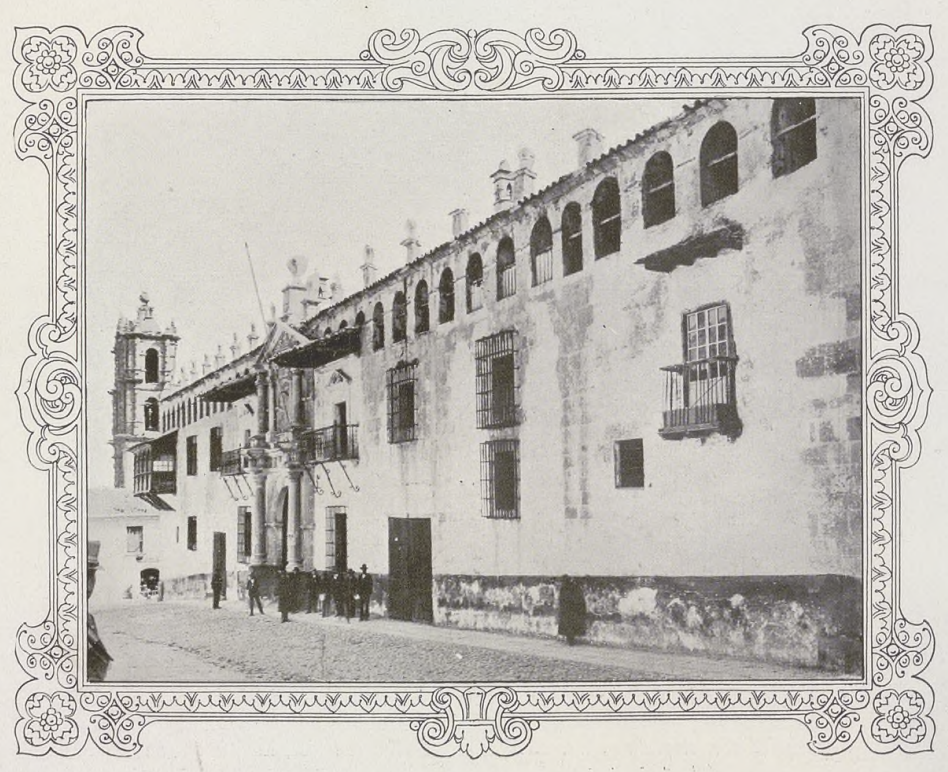
Em 1572, a Casa de Moneda de Potosí foi fundada. É o segundo edifício mais importante da cidade, depois da catedral. Foi ampliada e reformada várias vezes. Durante séculos, foi a principal usina monetária do império espanhol: ali se cunhavam as macuquinas, moedas feitas à mão com o martelo, com peso correto mas forma irregular.
A principal denominação era o real de a ocho, também chamado de peso duro ou, em inglês, piece of eight. Era uma moeda de prata de cerca de 38 mm, peso fixo (~27 gramas), com teor de prata estabelecido. Essa moeda se tornou a primeira moeda verdadeiramente global. Circulou do Brasil ao Japão, dos Estados Unidos à China, por mais de 300 anos. Foi a base da moeda americana depois da independência — e uma das teorias sobre a origem do símbolo $ é que ele viria da marca da Casa de Moneda de Potosí.

Durante as décadas de 1630 e 1640, ensaidores corrompidos da Casa de Moneda estavam adulterando sistematicamente o teor de prata das macuquinas. As moedas pareciam normais, mas tinham uma proporção maior de cobre do que o padrão real exigia. A fraude durou anos, afetou volumes enormes de prata, e tinha tentáculos até os comerciantes de Potosí e Lima.
Quando Madri finalmente descobriu, em 1648, mandou um juiz inquisidor, Francisco de Nestares Marín, para investigar. Nestares ordenou prisões, execuções — incluindo o decapitamento público do assayer Francisco de la Cueva —, destruição dos moldes antigos e recall de moedas em todo o império.
A fraude é analisada por Kris Lane em Potosí: The Silver City That Changed the World (UC Press, 2019), que a trata como sintoma da fragilidade do sistema imperial no auge da sua expansão.
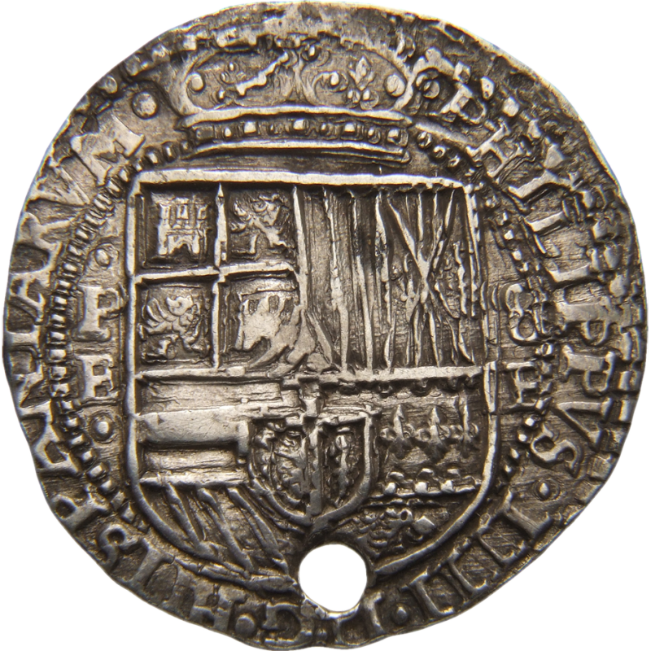
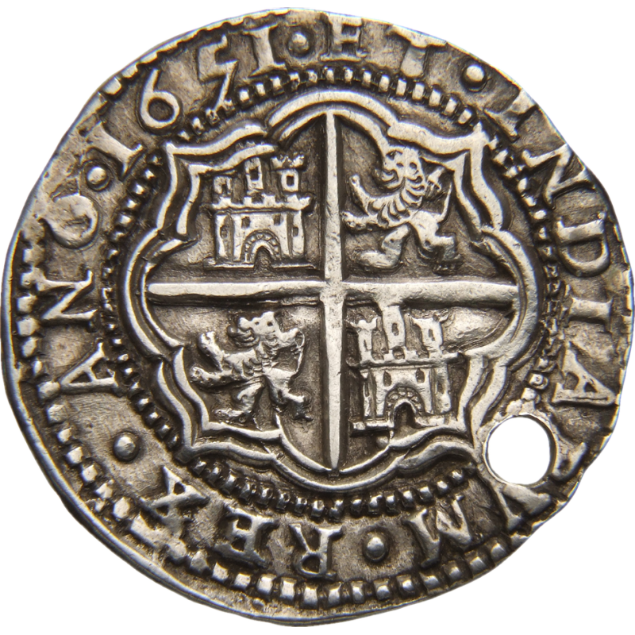
O Mundo
A arte barroca que misturou Pachamama com Cristo, a prata que chegou à China, e a crise que fechou o ciclo colonial.
Arte, religião e sincretismo

Potosí é um dos grandes centros culturais do barroco hispano-americano, mesmo que pouca gente fora da Bolívia e do Peru saiba. Três eixos culturais merecem atenção especial.
Ativa principalmente entre 1680 e 1790. O artista central é Melchor Pérez Holguín (c.1660-1732), nascido em Cochabamba e radicado em Potosí. Holguín é considerado o maior pintor do barroco mestiço andino. Seu estilo mistura influência de Zurbarán (jogo dramático de luz e sombra, chamado tenebrismo), com elementos puramente locais: abundância de ouro nos auréolos, rendas detalhadas nas roupas da Virgem, figuras com rigidez hierática que lembra a arte bizantina.

É um dos quadros mais estudados da arte latino-americana. Pintado em versões várias por volta de 1720, em Potosí, por autor desconhecido ou atribuído a seguidores de Holguín. A pintura mostra a Virgem Maria com o corpo fundido com a silhueta do Cerro Rico: a montanha e a Virgem são uma coisa só. Na base, o Papa, o rei Carlos V, o imperador Inca e autoridades espanholas prestam reverência. No céu, a Santíssima Trindade.
A leitura clássica, estabelecida pela historiadora boliviana Teresa Gisbert, é que essa pintura é uma representação direta do sincretismo entre o culto mariano e a Pachamama, a Mãe Terra andina adorada no Cerro Rico como um apu — espírito-montanha sagrado.

É a figura que ocupa santuários dentro das galerias do Cerro Rico, até hoje. Representa o dono do subterrâneo. A lógica cosmológica dos mineradores separa claramente: em cima manda Deus, em baixo manda El Tío. Oferendas de coca, cigarros e aguardente branca, feitas às terças e sextas, pedem proteção na jornada e evitam acidentes. No carnaval, acontece a ch'alla: sacrifício de lhama, sangue nas paredes da entrada, partilha ritual de bebida e tabaco.
A origem da figura é debatida: possivelmente um Supay quéchua — divindade subterrânea pré-colombiana — que os espanhóis demonizaram como "diabo", e que os indígenas incorporaram nessa forma transformada. A antropóloga June Nash, em We Eat the Mines and the Mines Eat Us (1979), descreve essa cosmologia como estratégia de sobrevivência: dar dono e rosto ao terror do subterrâneo torna possível trabalhar lá.
A prata que mudou o planeta
O que mudou com a prata de Potosí não foi apenas o imaginário europeu sobre riqueza. Mudou o funcionamento do sistema monetário global. Dois processos foram fundamentais.
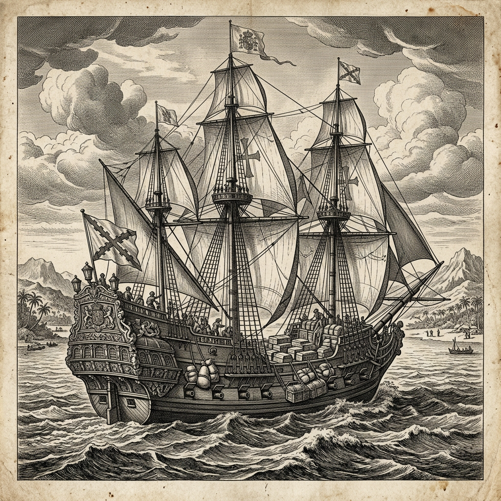
Em 1571, a Espanha fundou Manila nas Filipinas, com o objetivo explícito de criar uma ponte comercial entre as Américas e a China. A partir de 1573, todo ano, um ou dois galeões de Manila saíam de Acapulco, no México, carregando prata. Esses galeões atravessavam o Pacífico, chegavam a Manila, onde comerciantes chineses esperavam. A prata era trocada por seda, porcelana, especiarias, laca, chá.
A quantidade era imensa. Estimativas conservadoras falam em 50 toneladas de prata por ano, com picos chegando a 150 toneladas. Ao longo dos 250 anos de operação dos galeões (1571-1815), a maior parte da prata produzida no mundo acabou na China.
A dinastia Ming fez uma reforma fiscal chamada single-whip (yitiaobianfa) entre as décadas de 1530 e 1580. Antes, impostos eram pagos em grãos, serviço, trabalho. Depois, foram unificados num pagamento único em prata. A China não tinha prata suficiente. Dennis Flynn e Arturo Giráldez desenvolveram a tese da arbitragem ouro-prata para explicar essa dinâmica.
A chegada massiva de prata em Sevilha, pela Carrera de Indias, teve efeitos complexos. O mais discutido é a Revolução dos Preços do século XVI. Entre 1500 e 1600, os preços médios de bens básicos na Espanha triplicaram, segundo o estudo clássico de Earl Hamilton (American Treasure and the Price Revolution in Spain, 1501-1650, Harvard, 1934). Historiadores posteriores, especialmente Şevket Pamuk, revisaram essa tese.
Para a Coroa espanhola, a prata de Potosí era simultaneamente abundância e maldição. Os Habsburgos usaram a prata para financiar guerras em escala continental: contra os turcos, contra os holandeses (Guerra dos Oitenta Anos, 1568-1648), contra a Inglaterra, contra a França, contra os protestantes alemães (Guerra dos Trinta Anos, 1618-1648). O custo dessas guerras excedia muito a capacidade de arrecadação.
A prata de Potosí financiou o imaginário imperial espanhol e, indiretamente, financiou a ascensão dos rivais. Ao financiar guerras perdidas e produtos importados, a Espanha transferiu seus ativos para holandeses, ingleses e genoveses, que foram, no fim do século XVII, os reais vencedores econômicos da era moderna.
Declínio, independência e Patiño
Entre 1635 e 1700, Potosí entrou em declínio. Os veios ricos da superfície estavam esgotados. As galerias ficavam cada vez mais profundas. O custo por marco de prata subia. A mita começou a falhar, com cotas não cumpridas e azogueros mais dependentes de trabalho assalariado. A fraude da moeda na década de 1640 destruiu a confiança no produto de Potosí.
A população, que chegou aos 160.000, caiu para cerca de 60.000 no fim do século XVII e continuou caindo. Em 1825, no momento da independência boliviana, Potosí tinha apenas 10.000 habitantes. A montanha mais rica do mundo tinha virado uma cidade esvaziada, com igrejas barrocas gigantes e ninguém para preenchê-las.


Em 1780-1781, uma onda de rebeliões indígenas sacudiu o altiplano andino. Túpac Amaru II, no Peru, se levantou contra o sistema colonial; Túpac Katari, no que é hoje a Bolívia, sitiou La Paz por mais de cem dias com cerca de 40 mil combatentes aymaras. Os cercos envolveram tentativas de alagar a cidade represando rios.
A repressão foi brutal. Katari foi capturado em novembro de 1781 e esquartejado por quatro cavalos. Sua mulher, Bartolina Sisa, coliderança do movimento, foi executada em 1782.
Ao longo do século XIX, Potosí era um lugar sombrio e empobrecido. Mas o Cerro Rico guardava um segredo: o núcleo de estanho que os espanhóis haviam ignorado. Nos anos 1890, com a demanda mundial por estanho subindo, a mineração começou a crescer na região.
A produção explodiu: de 100 toneladas em 1861 para quase 10.000 toneladas em 1900.
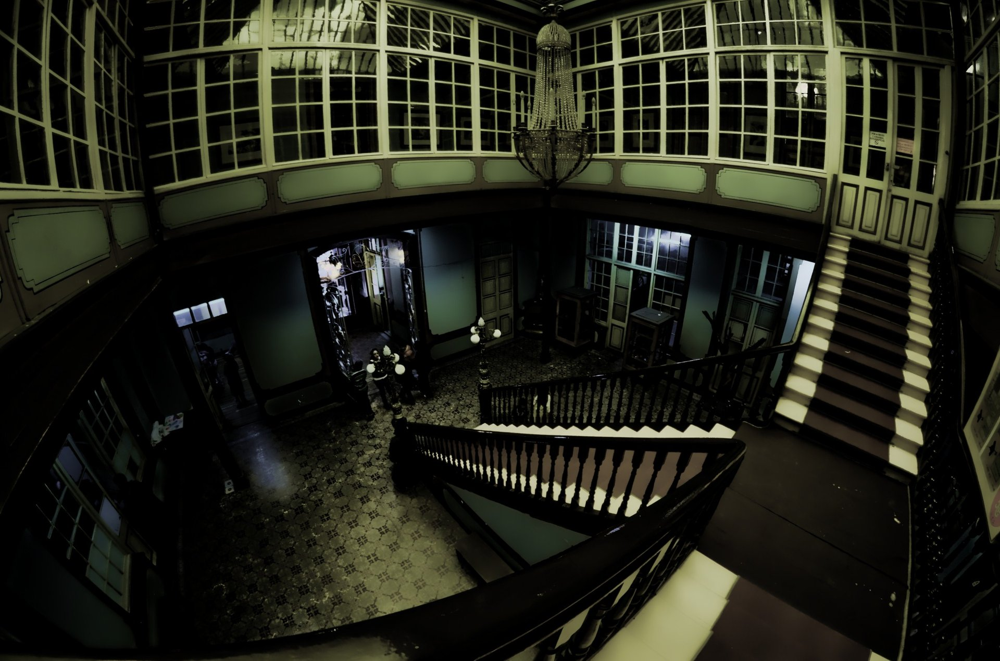
O símbolo humano dessa fase é Simón Patiño (1860-1947). Nascido pobre em Cochabamba, Patiño começou como funcionário de uma mineradora. Em 1900, descobriu um veio de estanho de altíssima qualidade em Llallagua, perto de Potosí. A sorte fez dele proprietário. Durante as décadas seguintes, ele comprou as minas adjacentes (Catavi, Siglo XX, Uncía) e construiu um império do estanho. Nos anos 1940, era considerado um dos cinco homens mais ricos do mundo.
Em dezembro de 1942, trabalhadores de Catavi em greve foram massacrados por tropas do governo boliviano. Na Revolução Boliviana de 1952, as empresas de estanho de Patiño e dos outros "barões do estanho" foram nacionalizadas e passaram para a COMIBOL. Em 1985, o colapso dos preços internacionais do estanho destruiu de vez a economia mineira do Cerro Rico. A COMIBOL demitiu dezenas de milhares de trabalhadores.

Hoje
As cooperativas, as crianças, o cume que afunda alguns centímetros por ano e os debates historiográficos em aberto.
Cooperativas, crianças, silicose

O Cerro Rico atual é minerado por cooperativas de pequenos mineradores, não mais por uma empresa estatal. É um sistema precário. Os cooperativados pagam uma taxa para ter acesso a uma seção da montanha, trabalham com seus próprios meios, vendem o minério por conta. Não têm salário fixo, não têm previdência, não têm seguro de saúde.
As estimativas atuais do número de mineradores variam muito. Reportagens de 2023 falavam em 12.000. Em 2024, 20.000. Em reportagens recentes de outubro de 2025, 30.000. O aumento está ligado à alta recente dos preços internacionais de metais.
Trabalho infantil persiste. O documentário "The Devil's Miner" (2005), dirigido por Kief Davidson e Richard Ladkani, acompanha Basilio Vargas, um menino de 14 anos que trabalha no Cerro Rico junto com o irmão menor. O filme ganhou mais de uma dúzia de prêmios internacionais. Em 2020, 15 anos depois, uma professora da Universidade de Michigan contatou Basilio: ele seguia trabalhando na mina.
A montanha que afunda
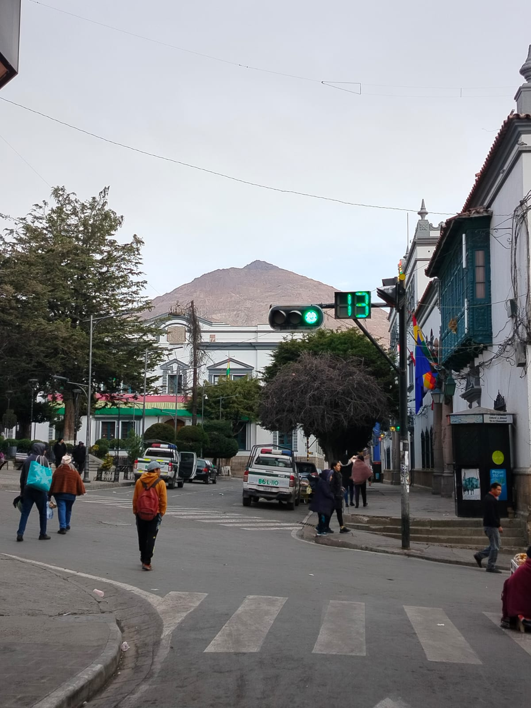
Em meados de fevereiro de 2011, uma depressão enorme abriu no cume da montanha — segundo relatos, com 17 metros de largura e 22 metros de profundidade. A UNESCO, que havia designado Potosí como Patrimônio da Humanidade em 1987, pôs a cidade em lista de patrimônio em perigo em 2014.
Esforços de estabilização, incluindo preenchimento de galerias com rejeitos e monitoramento por satélite, fazem parte da "Rota Crítica" que o governo boliviano apresentou em 2024. Mas o número de mineradores continua crescendo, e cada nova galeria aberta enfraquece mais a estrutura. O cume continua afundando alguns centímetros por ano.
Especialistas estimam que, se nada mudar fundamentalmente, uma parte do cume pode desabar em grande escala em décadas, não em séculos.
O que a historiografia atual discute
Alguns números e interpretações em Potosí têm debate aberto. Vale saber onde a historiografia atual se posiciona, e onde discorda.

A cifra mais citada popularmente é a de 8 milhões de mortos, que vem do livro "As Veias Abertas da América Latina" (1971), de Eduardo Galeano. O número tem três problemas. Primeiro, Galeano nunca forneceu fonte precisa. Segundo, Galeano mais tarde reconheceu, numa entrevista em 2014, que seu livro era um ensaio apaixonado, não uma pesquisa histórica. Terceiro, pesquisas modernas sobre o tamanho real da força de trabalho em Potosí sugerem que o número é demograficamente implausível: mesmo nos anos de pico, o número de mitayos ativos em Potosí raramente passava de 5.000 simultâneos.
O que a historiografia séria diz: Kendall Brown, autor de uma história das minas latino-americanas, argumenta que "centenas de milhares" é mais defensável. Nicholas Robins, especialista em mortalidade das minas de mercúrio, chega a dezenas de milhares de mortes diretas e "possivelmente várias centenas de milhares" em causas relacionadas. O consenso é: foi um dos maiores crimes contra humanidade da história moderna, mas 8 milhões provavelmente exagera.
Kris Lane, nos últimos anos, defende que sim: foi lá que, pela primeira vez, uma cidade concentrou produção, distribuição e consumo ligados a todos os continentes habitados simultaneamente. Outros historiadores preferem Lisboa, ou Manila, ou Antuérpia. Mas há consenso de que Potosí foi um nó fundamental da primeira economia verdadeiramente global, qualquer que seja o rótulo.
Durante muito tempo se viu o período colonial em Potosí como uma ruptura total com o mundo pré-hispânico. Historiadores das últimas duas décadas, especialmente os bolivianos, argumentam que a continuidade foi maior do que se pensava: as huayras seguiram em uso, as mulheres indígenas comerciantes criaram uma economia paralela, El Tío é continuidade do Supay, a Virgem do Cerro é continuidade da Pachamama. A conquista foi violenta, mas não apagou a matriz cultural andina.
Créditos das imagens
Imagens do Wikimedia Commons e do Metropolitan Museum of Art, algumas redimensionadas ou recortadas. As ilustrações do forno huayra, do processo do pátio e do galeão de Manila foram geradas por inteligência artificial.
- Cerro Rico visto do alto · Mhwater · Domínio público
- Vista aérea de Potosí · Parallelepiped09 · CC BY-SA 4.0
- Rocha dentro do Cerro Rico · Diego Tirira · CC BY-SA 2.0
- Estatueta inca feminina · The Metropolitan Museum of Art · Domínio público
- Hacienda Nueva de Fresnillo · Pietro Gualdi · Domínio público
- Arte de los Metales, figura 1 · Álvaro Alonso Barba · Domínio público
- Lagunas de Kari Kari · Victor Sounds · CC BY-SA 2.0
- Mina de prata em corte · Wellcome Collection · CC BY 4.0
- Entrada do vice-rei Morcillo · Melchor Pérez de Holguín · Domínio público
- Americae pars quinta · Johann Theodor de Bry, Stradanus · Wellcome Collection · CC BY 4.0
- Vista de Potosí · Viko Cazas · CC BY-SA 4.0
- Historia de la Villa Imperial · Arzáns de Orsúa y Vela · Domínio público
- Casa de Moneda · Revista Plus Ultra, 1930 · Domínio público
- Moedas de 8 reales · Daderot · CC0
- 8 reales de 1651, anverso e reverso · Reinhard Saczewski · CC0
- São Lucas Evangelista · Melchor Pérez de Holguín · Domínio público
- La Virgen del Cerro (fotografia) · Dan Lundberg · CC BY-SA 2.0
- El Tío · M. Cammeraat · CC BY-SA 4.0
- Igreja de San Lorenzo · Dan Lundberg · CC BY-SA 2.0
- Túpac Katari · Autor desconhecido · Domínio público
- Mansão de Simón Patiño · Juan Manuel Montes Jordán · CC BY-SA 3.0
- Cerro Rico hoje · Agar2005 · CC0
- Mineiros no flanco do Cerro Rico · Christophe Meneboeuf · CC BY-SA 2.5
- Mineiros no Cerro Rico · Eduardo Manchon · CC BY-SA 3.0
- Mineração em Potosí · Theodor de Bry, Historia Americae sive Novi Orbis, 1596 · Domínio público
- Retrato de Francisco de Toledo · Autor desconhecido · Domínio público
- Capa de Las Venas Abiertas de América Latina · Siglo XXI Editores · Domínio público


_(17040501258).jpg){kind=link}


.jpg){kind=link}


_-_anverso.jpg){kind=link}
_-_reverso.jpg){kind=link}

.jpg){kind=link}

.jpg){kind=link}
.jpg){kind=link}


.jpg){kind=link}


.jpg){kind=link}